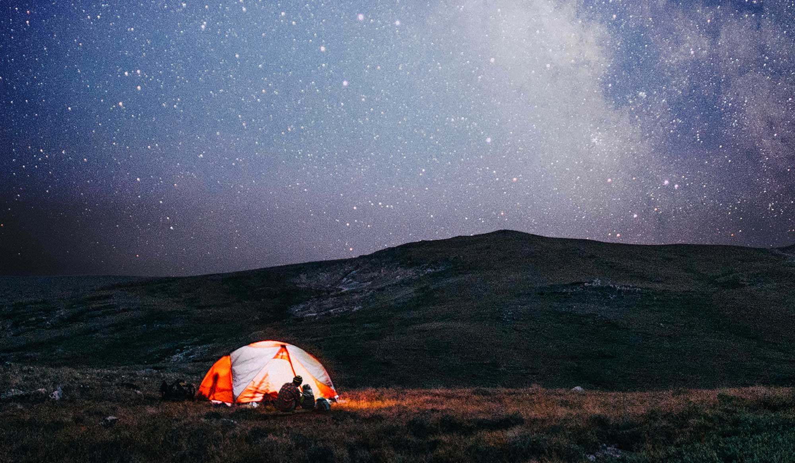
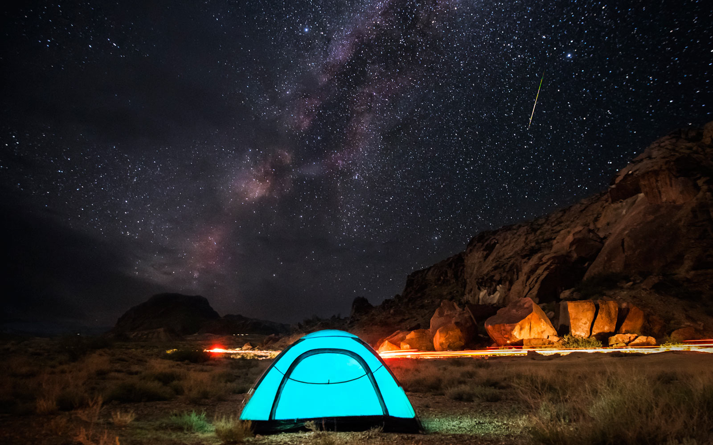
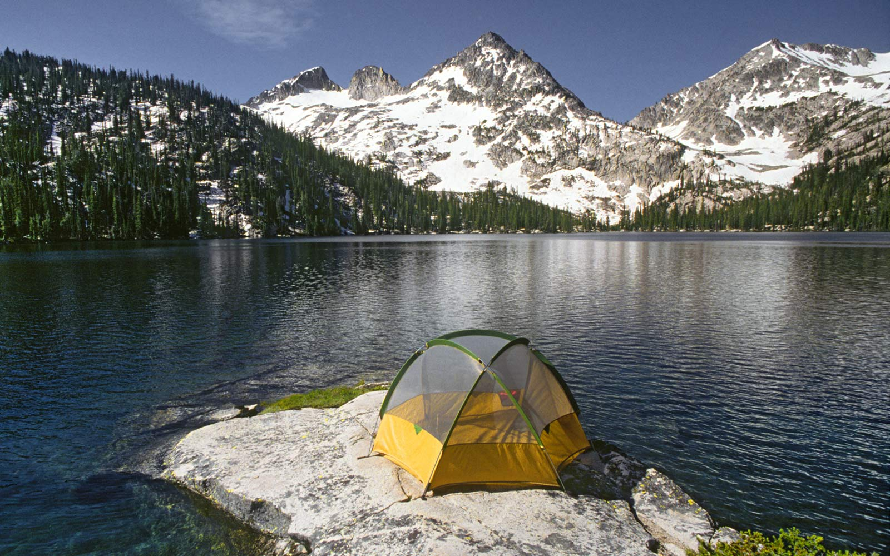
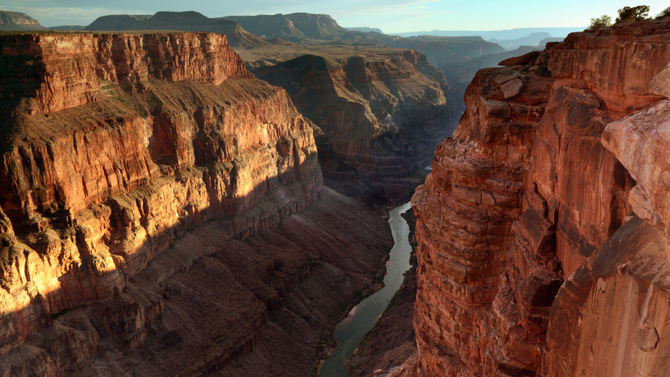

Camping is an activity passed on from generation to generation. People have been camping in national parks for over 100 years. Families pass down traditional survival skills while also spending time together and enjoying the landmarks/views of the campsite. Camping requires you to be independent and rely on yourself and companions to meet basic needs: purify water, build a fire, and survive the wilderness. This is also a time of family bonding and a great way to connect as a family without distraction.
Nature is such a beautiful aspect of camping. Whether you've pitched a tent in the middle of the forest or you're parking the RV for the night, you're out in mother nature's creation and experiencing what it's like without technology and other distractions. There are many different places to visit that all have different types of views and experiences nature has to offer. There are many types of camping: backpacking, glamping, rv camping, bicycle camping, and other fun types of camping.
Camping also has a unique way of getting you away from technology. Most of the time there isn't a cell tower to connect to the internet so it gives you a sense of exclusion from society. Many people enjoy camping for this reason; it gives you a chance to get away and breathe the fresh air that clears your mind. Camping is also generally good for not only your mental health but physical health too because of the endless amount of activities you can participate in while camping: biking, fishing, swimming, rafting, running, playing frisbee, and other fun exercises.
Big Bend National Park, Texas
Big Bend National Park is a great place for rafting, canoeing, and kayaking. This beautiful campground is along the Rio Grande and there are trails along the park's desert, mountain, and river landscapes for hiking or backpacking. The park is open as of now but operates at reduced capacity, although visitor centers are closed. The park is a geological marvel evidenced in sea fossils and dinosaur bones. Some say you can still hear the whispers of pioneers, ranchers, miners, and Native Americans; a place where countries and cultures meet.
Sawtooth National Forest, Idaho
Sawtooth National Forest consists of 756,000 acres of gorgeous mountainous scenery. It has over 700 miles of trails, 40 peaks rising over 10,000 feet, and 300-plus high-elevation alpine lakes. There are four mountain ranges and four major alpine lakes: Alturas, Pettit, Redfish, and Stanley. These all have camping, boating, fishing, and hiking. Overall, this campground is very mountainous accompanied by many trees and lush greenery.
Grand Canyon National Park, Arizona
The Grand Canyon is such an amazing experience and trip. The history behind how the Grand Canyon was navigated is a dark and daring one, but also intriguing to learn about. Most visitors are attracted to the South Rim (there are free park shuttle buses to ferry you around the rim) although the North Rim is closed for winter each year. The Canyon is 227 river miles long and 18 miles wide with many viewpoints and spots to go delve into the Canyon to see the many rock formations.
